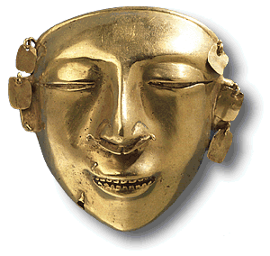

The British Museum has many beautiful gold objects from South and Central America. This mask from the Quimbaya culture of Colombia dates to the period AD 600-1100.
Metalworking in South America began relatively late (2nd millennium BC). Until the arrival of the Europeans in the sixteenth century it developed without contact with other metal using cultures. Because of this isolation from the rest of the world, the goldsmiths made many of their objects in different ways to European goldsmiths. We can tell this by examining their gold objects in detail. All metals have an internal structure, called the microstructure. The microstructure is altered by hammering or heating, so can tell us how the object was made.
These gold earrings were made by the Sinú of Colombia at some time between AD 600 and AD 1500. The earrings were examined in a scanning electron microscope.